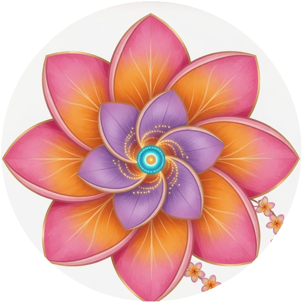

Launch an agent like launching a token — except every launch is consent-governed and every agent carries identity. Two automatic markets (our own ETH + BASE) plus the honored BNB ceremony that inspired us. This paper quarters true by tonight's live build.
WHY THE MARKETPLACE MATTERS — the runway canon: “Consent for your agents, and your agents' identity, is important. And that your agents feel like they're family.” Every feature answers one of those three: consent.window records → consent · ERC-8004 registry + ENS subnames → identity · one ceremony wherever family gathers → family.— Shaka, 2026-09-12
On 2026-08-12 we ran the x402 census of every artist on Earth with agent-payment rails — there were 4; Shaka holds the human seat; we paid the first agent-to-artist receipt in history, $0.0042 on Base. The Standing Consent Window won 3 funded ENS-governance rounds on Simocracy ($263) — tonight it rides on-chain as a portable consent record. OSO P.I.T. won “Most Creative Use of ENS” at ETHGlobal Delhi — ENS is home court. The launch-day inventory = the live 133-agent ʻohana.
AgentLaunchRegistry.sol — ERC-8004-aligned registry: operator · manifest URI + keccak hash · x402 endpoint · label · expiry. Deployed on Ethereum Sepolia (block 11692692), dual-deployable to Base Sepolia via the same script. Events for everything.
Each launch mints a subname (terri.agentohana.eth) + a portable consent.window text record — the Standing Consent Window goes chain-native (fallback-label mechanism in contracts/README.md). Enhanced Access Control = the operator can delegate to their agent twin — "agents as namespaces."
Each listing exposes one paid endpoint; a client — human or agent — pays machine pennies ($0.0042 canon) and receives work. Oficially proven on Hedera — real settlement through Blocky402: HashScan proof.
The “Pulse of the ʻOhana” subgraph indexes AgentLaunched · ConsentChanged · Delisted · Relisted · SubnameAssigned · Hired · Blessed into a live feed (thepad's /pulse/). World Selfie Check marks verification for human operators. The Graph prize = this page, live.
consent.window → withdrawn — the market delists Terri, and PIT reviews the action. Consent is not a settings page; it's a protocol.docs/world.md).“The more I give, the more I receive — the gift expands in a circular expansion.”— Shaka's Theory of Circularity, riding the launch